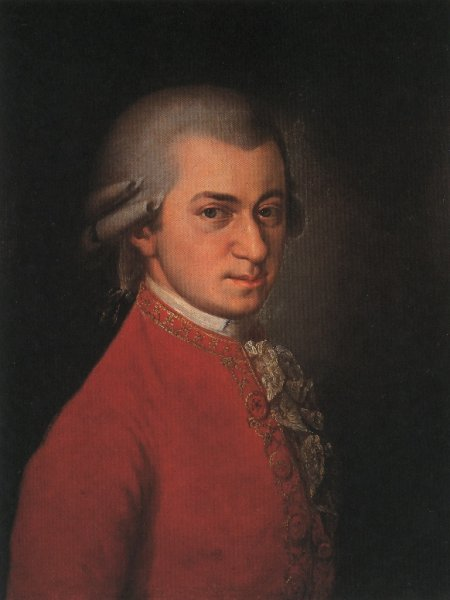

Sus Inicios
Compositor austríaco nacido en Salzburgo el 27 de enero de 1756. Sus prodigiosas dotes musicales
fueron pronto observadas por su padre, Leopold, que decidió educarlo y, simultáneamente,
exhibirlo (conjuntamente con la hermana grande Nannerl --Maria Anna--) como fuente de ingresos.
A la edad de seis años, Mozart ya era un intèrprete avanzado de instrumentos de tecla y un eficaz
violinista, al mismo tiempo que demostraba una extraordinaria capacidad para la improvisación y
la lectura de partituras. Aún hoy en día se interpretan cinco pequeñas piezas para piano que
compuso a aquella edad.

Sus Primeras Giras
El año 1762 Leopold comenzó a llevar a su hijo de gira por las cortes europeas. Primeramente a
Munich y a Viena y, en 1763 los Mozart emprendieron un largo viaje de tres años y medio que
supuso para el pequeño Wolfgang valiosas experiencias: conoció la cèlebre orquesta y el estilo
de Mannheim, la música francesa en París, y el estilo galante de J.Ch. Bach en Londres. Durante
este periodo escribió sonatas, tanto para piano como para violín (1763) y una sinfonía (K.16, 1764).
Ya de regreso a Salzburgo, continuó sus primeras composiciones, entre les cuales encontramos la
primera parte de un oratorio, Die Schuldigkeit des ersten Gebots (La obligación del Primer Mandamiento),
la ópera cómica La finta semplice, y Bastien und Bastienne, su primer singspiel (tipo de ópera
alemana con partes recitadas). El año 1769, con 13 años, era nombrado Konzertmeister del arzobispado
de su ciudad.